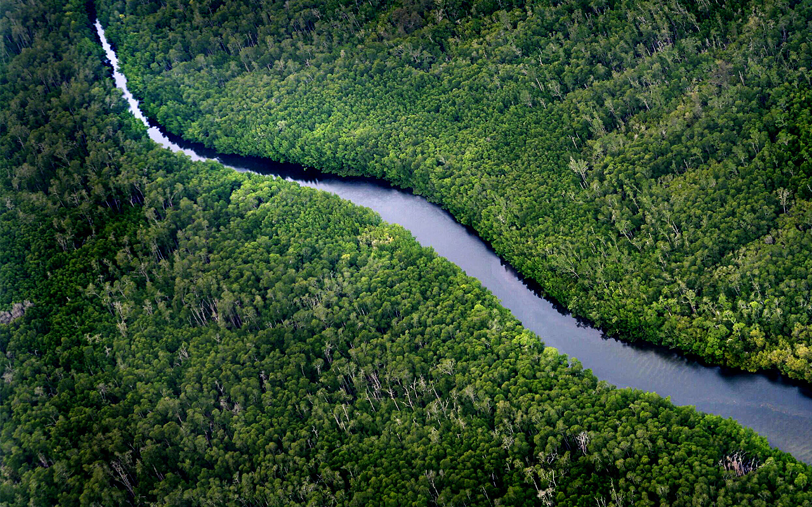
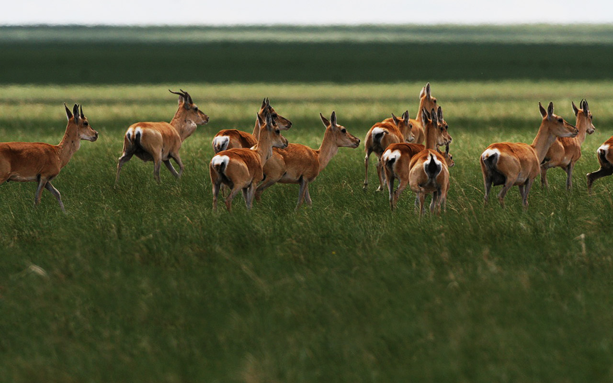
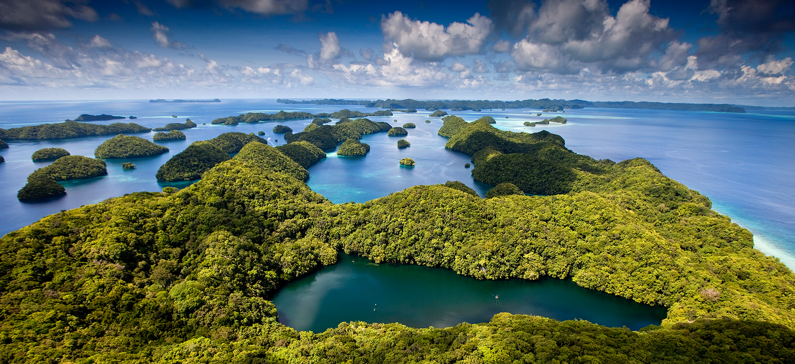

大自然保护协会（TNC,The Nature Conservancy）成立于1951年，是国际上最大的非营利性的自然环境保护组织之一。一直致力于在全球保护具有重要生态价值的陆地和水域，维护自然环境、提升人类福祉。

TNC在北美洲
TNC在欧洲
TNC在亚太
TNC在中南美洲
TNC在非洲



气候变化
全球气候变化加剧，对自然生态系统和人类带来巨大影响。TNC正努力利用基于生态的手段，预测气候变化的影响，增强人类和生态系统应对气候变化的能力，寻求以森林碳汇为代表的更多缓解气候变化的解决方案。


信息服务
TNC一直致力于与更多的生态保护爱好者、业内专家以及研究人员，分享我们的保护经验与信息。TNC希望，这个平台，能够为人们提供保护的最新数据和保护工具。

保护科学
向更多的人介绍生态保护工作的重要，不能仅依靠数据和图标，还需要集合社会学、心理学、传播学等多学科的知识，对艰涩的科学术语进行解读。点击“生态系统服务功能”和“人与生态保护”，了解 TNC 关于人类与环境相互依存关系的再思考。